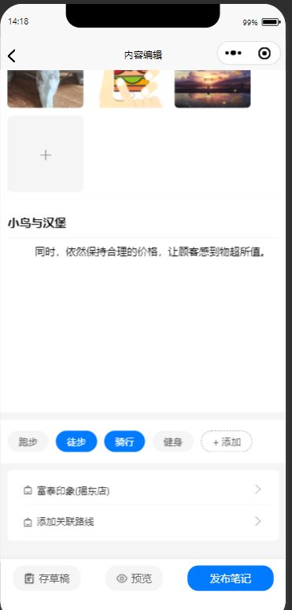

功能模块图
本社区旅游地图软件通过四大核心模块——用户模块、文章模块、地图模块和地点模块，构建一个互动性强、个性化十足的旅游社区平台。
用户模块：管理用户身份和信息，提供个性化服务。
文章模块：发布、编辑和互动旅游文章，关联地点与地图。
地图模块：创建、编辑和分享旅游地图，支持一键拓客等。
地点模块：标记、查询和编辑旅游地点信息、查看相关文章

首页-社区
首页：文章展示界面：提供四个功能入口，顶部全局搜索按钮便捷查询地点、文章、路线；中间轮播图展示内容，下方热点文章展示最新文章资讯。
社区：以旅游路线为核心，结合途径热门地点，展示详细旅游方案，为游客提供一站式服务，打造便捷、丰富的旅游规划体验
uni-search-bar
uni-swiper
下拉刷新
一键拓客
选择地点范围、地址类型，搜索符合的地点，按页查看地点的详细信息，并一键导入到自己的地图
腾讯地图
uni-picker
POI搜索

地址选点
按地址名称搜索地址，通过关键词联想相关地址，选择地址与样式并导入自己的地图，同时可拖拽定位
chooseLocation
事件监听
周边查询
跟据定位查询周边地点信息，拖拽地图可查找相应位置的周边地点，并按照地点类型在地图上标注，点击地点后可查看地点信息、与地点关联的文章信息
popup
路线展示
在地图上展示用户上传的路线，拖拽抽屉查看路线的详细信息，查看路线途径点关联的图片、备注等，路线可收藏、导入我的地图
ES6
选择器
路线绘制
选择地址导入地图、设置每个地址的到达时间、备注、一键生成地图路线
polyline

文章相关
用户可浏览社区文章、对自己的文章内容进行的增删查改，包含了标签管理，文章关联地点、路线、文章评论